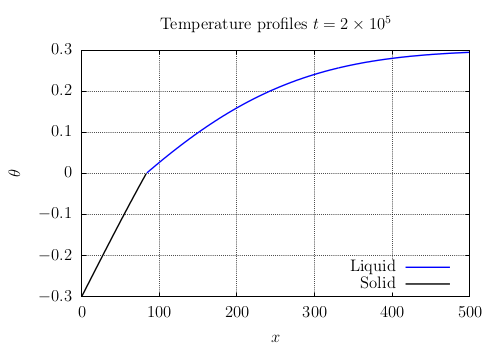
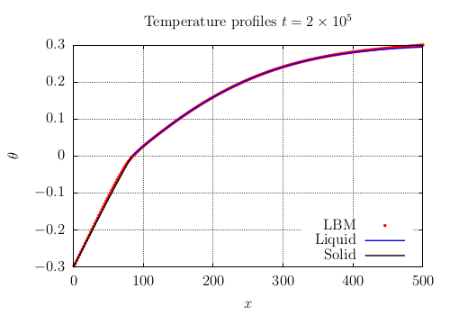
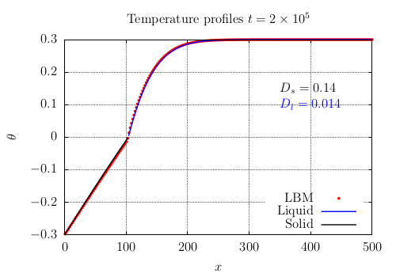

Implementation of Allen-Cahn coupled with temperature for phase change problems
Objective of this 2nd tutorial
The starting point is the kernel ADE_for_AC-Temp_Tutorial which simulates (again) the Advection-Diffusion Equation (ADE) with the lattice Boltzmann method:
Mathematical model
Partial Derivative Equations
In this tutorial we will implement a model to simulate a phase change problem composed of two coupled PDEs, a first one for the evolution of dimensionless temperature:
where \(\theta\) is a dimensionless temperature, \(D\) is the diffusivity parameter and \(\phi\) the phase-field. The second equation is for the evolution of phase-field:
where \(M_{\phi}\) is the mobility parameter, \(W\) is the interface thickness, \(\mathscr{A}=10/48\) is known parameter and \(\theta_I\) the temperature at interface.
Boundary and initial conditions
The model will be validated with an analytical solution of the 1D Stefan problem which is obtained for Dirichlet boundary conditions.
The boundary conditions for the temperature equation are:
\[\begin{split}\theta(0,t)&=&\theta_w\\ \theta(L,t)&=&\theta_{\infty}\end{split}\]where the index \(w\) means wall and \(L\) is the domain length.
The initial condition is a constant temperature
\[\theta(\boldsymbol{x},0)=\theta_{\infty}\]
The boundary conditions for the phase-field equation are:
\[\begin{split}\phi(0,t)&=&0\\ \phi(L,t)&=&1\end{split}\]
The initial condition is a hyperbolic tangent solution at \(x_0=0\)
\[\phi(\boldsymbol{x},0)=\frac{1}{2}\left[1+\text{tanh}\left(\frac{2(x-x_0)}{W}\right)\right]\]
Objective
In this tutorial we will see how to
add a new equation and all related stages (setup_collider, update, boundary conditions, etc.)
The verification will be carried out with one analytical solution of the Stefan problem (see section 4). We will
compare the outputs of LBM_Saclay with an analytical solution
see the impact of linear and harmonic interpolation of diffusivity \(D(\phi)\)
1. Create a new kernel ACT for Allen-Cahn/Temperature
Make the new kernel ACT in a new folder Allen-Cahn-Temp_Tutorial
That stage 1. is the same than the first tutorial on Cahn-Hilliard.
Copy the folder
ADE_for_AC-Temp_Tutorialand rename itAllen-Cahn-Temp_TutorialModify
_ADE(for Advection-Diffusion Equation) by_ACT(for Allen-Cahn/Temperature).
Details of commands
Copy the ADE kernel template and rename all files with new extension _ACT
Copy and rename the folder
ADE_for_AC-Temp_Tutorialwhich is contained inkernels/Templates_for_Tutorials.
Commands
$ cd LBM_Saclay_Rech-Dev/src/kernels $ cp -r Templates_for_Tutorials/ADE_for_CH-Tutorial ./Allen-Cahn-Temp_TutorialRemarks
Your new developments will be performed in the folder
Cahn-Hilliard_TutorialThe folder name
ADE_for_AC-Temp_Tutorialwill be used for compilation
All files have the extension
_ADEfor Advection Diffusion Equation. Rename them with_ACTfor Allen-Cahn Temperature.
Commands
$ cd Cahn-Hilliard_Tutorial $ mv Index_ADE.h Index_ACT.h $ mv LBMScheme_ADE.h LBMScheme_ACT.h $ mv Models_ADE.h Models_ACT.h $ mv Problem_ADE.h Problem_ACT.h
Edit them and change strings _ADE with _ACT
Change strings
_ADEwith_ACTOpen all files in your favorite editor (e.g.
geanyorcodium).Search in all files the strings
_ADEand replace them with_ACT(Ctrl Hwithgeany).
Change the problem name: in file
Setup.hmodify the problem nameADEwithACTregister_problem<Problem, ModelParams::Tag2Quadra>("ADE", "base");
Modification with
ACTregister_problem<Problem, ModelParams::Tag2Quadra>("ACT", "base");Remark
Your new problem will be named
ACTinside your.iniinput file i.e. in section[lbm]your problem must be:[lbm] problem=ACT
Compile your new kernel
Generate your
makefile(only once)
Commands
$ cd LBM_Saclay_Rech-Dev $ mkdir build_ACT $ cd build_ACT $ cmake -DKokkos_ENABLE_OPENMP=ON -DPROBLEM=Allen-Cahn-Temp_Tutorial ..
Compile
Command
$ make -j 22
Run with input files of ADE
Execute your new kernel
ACTof LBM_Saclay either with the simple diffusion of gaussian or with the advected gaussian in the folderrun_training_lbm/Tutorial_Stefan
Commands
Go to the directory
$ cd LBM_Saclay_Rech-Dev/run_training_lbm/Tutorial02_AC-TempRun simple diffusion of gaussian
$ ../../build_ACT/src/LBM_saclay TestCase_Gaussian_ADE.ini
Check the solutions with paraview.
2. Add a new equation in your kernel ACT
The mathematical model is composed of two coupled PDE. It is necessary to add one supplementary equation.
Problem
The number of equation is currently 1
Base::nbEqs = 1; const int isize = params.isize; const int jsize = params.jsize; const int ksize = params.ksize;
Modify it for two equations
Solution
Base::nbEqs = 2;
Function init_f()
The initialization is currently performed only for one equation:
if (params.collisionType1 == BGK) { init1eq<EquationTag1, BGKCollider<dim, npop>>(); } else if (params.collisionType1 == MRT) { init1eq<EquationTag1, MRTCollider<dim, npop>>(); }
Add a new block
if-else ifforEquationTag2
Solution
if (params.collisionType1 == BGK) { init1eq<EquationTag1, BGKCollider<dim, npop>>(); } else if (params.collisionType1 == MRT) { init1eq<EquationTag1, MRTCollider<dim, npop>>(); } if (params.collisionType1 == BGK) { init1eq<EquationTag2, BGKCollider<dim, npop>>(); } else if (params.collisionType1 == MRT) { init1eq<EquationTag2, MRTCollider<dim, npop>>(); }
Function update_f()
The update is also performed only for one equation:
if (params.collisionType1 == BGK) { update1eq<EquationTag1, BGKCollider<dim, npop>>(); } else if (params.collisionType1 == MRT) { update1eq<EquationTag1, MRTCollider<dim, npop>>(); }
Add a new block
if-else ifforEquationTag2
Solution
if (params.collisionType1 == BGK) { update1eq<EquationTag1, BGKCollider<dim, npop>>(); } else if (params.collisionType1 == MRT) { update1eq<EquationTag1, MRTCollider<dim, npop>>(); } if (params.collisionType1 == BGK) { update1eq<EquationTag2, BGKCollider<dim, npop>>(); } else if (params.collisionType1 == MRT) { update1eq<EquationTag2, MRTCollider<dim, npop>>(); }
Function make_boundaries()
The update of bounday conditions is also performed for a single equation
this->bcPerMgr.make_boundaries(scheme.f1, BOUNDARY_EQUATION_1);
Add a new line for
f2andBOUNDARY_EQUATION_2
Solution
this->bcPerMgr.make_boundaries(scheme.f1, BOUNDARY_EQUATION_1); this->bcPerMgr.make_boundaries(scheme.f2, BOUNDARY_EQUATION_2);
Function struct LBMScheme
Add a new tag
tagPHIforEquationTag2
Solution
EquationTag1 tagC; EquationTag2 tagPHI;
Add two empty functions called
setup_colliderforEquationTag2with respectively BGK and MRT collisions
Solution
KOKKOS_INLINE_FUNCTION void setup_collider(EquationTag2 tag, const IVect<dim>& IJK, BGK_Collider& collider) const { } KOKKOS_INLINE_FUNCTION void setup_collider(EquationTag2 tag, const IVect<dim>& IJK, MRT_Collider& collider) const {Remark
Those two functions are empty (but declared). The first one will be filled below.
Function make_boundary
The boundary conditions are applied only for Advection-diffusion equation
// ADE boundary if (Base::params.boundary_types[BOUNDARY_EQUATION_1][faceId] == BC_ANTI_BOUNCE_BACK) { real_t boundary_value = Base::params.boundary_values[BOUNDARY_CONCENTRATION][faceId]; for (int ipop = 0; ipop < npop; ++ipop) this->compute_boundary_antibounceback(tagC, faceId, IJK, ipop, boundary_value); } else if (Base::params.boundary_types[BOUNDARY_EQUATION_1][faceId] == BC_ZERO_FLUX) { for (int ipop = 0; ipop < npop; ++ipop) this->compute_boundary_bounceback(tagC, faceId, IJK, ipop, 0.0); }
Add a new block
if-else ifforBOUNDARY_EQUATION_2andtagPHIwith keyworkBOUNDARY_PHASE_FIELD
Solution
if (Base::params.boundary_types[BOUNDARY_EQUATION_2][faceId] == BC_ANTI_BOUNCE_BACK) { real_t boundary_value = Base::params.boundary_values[BOUNDARY_PHASE_FIELD][faceId]; for (int ipop = 0; ipop < npop; ++ipop) this->compute_boundary_antibounceback(tagPHI, faceId, IJK, ipop, boundary_value); } else if (Base::params.boundary_types[BOUNDARY_EQUATION_2][faceId] == BC_ZERO_FLUX) { for (int ipop = 0; ipop < npop; ++ipop) this->compute_boundary_bounceback(tagPHI, faceId, IJK, ipop, 0.0); }
3. Modifications inside each file of your kernel ACT
Advice
During your implementation, it is strongly recommended to compile regularly to detect any typos. See Advice
Declaration of new fields
In enum ComponentIndex, only the indices for macroscopic fields such as concentration \(c\) (IC) and velocity components \(u_x\) (IU), \(u_y\) (IV) & \(u_z\) (IW) are declared:
enum ComponentIndex { IU , /*!< X velocity / momentum index */ IV , /*!< Y velocity / momentum index */ IW , /*!< Z velocity / momentum index */ IC , /*!< Phase field index */ COMPONENT_SIZE /*!< invalid index, just counting number of fields */ };
Replace
ICbyITEMPand add the new indices for chemical potentialIPHIand laplacianIDPHIDT.
Solution
enum ComponentIndex { IU , /*!< X velocity / momentum index */ IV , /*!< Y velocity / momentum index */ IW , /*!< Z velocity / momentum index */ ITEMP , /*!< Temperature index */ IPHI , /*!< Phase field index */ IDPHIDT, COMPONENT_SIZE /*!< invalid index, just counting number of fields */ };
Add new outputs
In struct index2names only the strings for concentration and velocity components are written:
map[IC ] = "comp"; map[IU ] = "vx"; map[IV ] = "vy"; map[IW ] = "vz";
Modify for temperature and add new outputs for \(\phi\) and \(\partial \phi/\partial t\).
Solution
map[ITEMP ] = "temp"; map[IU ] = "vx" ; map[IV ] = "vy" ; map[IW ] = "vz" ; map[IPHI ] = "phi" ; map[IDPHIDT] = "dphidt"; .. admonition:: Remark :class: important The keywords ``temp``, ``phi``, and ``dphidt`` will be used in the ``.ini`` input file to write those fields.
Add specific functions for temperature equation
Add a function
Source_TEMPfor the source term of temperature equation
Solution
Source_TEMP// ======================================================= // Source term for temperature equation KOKKOS_INLINE_FUNCTION real_t Source_TEMP(EquationTag1 tag, const LBMState& lbmState) const { real_t dphidt = lbmState[IDPHIDT]; return -dphidt; }
Modify the name of collision rate function for temperature equation
Solution
tau_TEMPKOKKOS_INLINE_FUNCTION real_t tau_TEMP(EquationTag1 tag, const LBMState& lbmState) const { real_t tau = 0.5 + (3.0 * D * dt / (dx * dx)); return (tau); }
Warning
Because IC has been replaced by ITEMP in enum ComponentIndex (file Index_ACT.h), don’t forget to find and replace in all functions lbmState[IC] by lbmState[ITEMP].
Add specific functions for phase-field equation
Add a new function
M0_PHI
Solution function
M0_PHI// ======================================================= // zero order moment for phase field KOKKOS_INLINE_FUNCTION real_t M0_PHI(EquationTag2 tag, const LBMState& lbmState) const { return lbmState[IPHI]; }
Add a new function
M2_PHI
Solution function
M2_PHI// ======================================================= // Second order moment for phase field KOKKOS_INLINE_FUNCTION real_t M2_PHI(EquationTag2 tag, const LBMState& lbmState) const { return lbmState[IPHI]; }
Add a source term.
Solution
Source_PHI// ======================================================= // Source term for phase field KOKKOS_INLINE_FUNCTION real_t Source_PHI (EquationTag2 tag, const LBMState& lbmState) const { real_t phi = lbmState[IPHI]; real_t temp = lbmState[ITEMP]; real_t tempI = 0.0; real_t Coeff_A = 10.0/48.0; real_t S = - (16.0*mobility/(W*W)) * phi * (1.0-phi) * (1-2*phi) -((4.0*D)/(Coeff_A*W*W))*(tempI-temp)*phi*(1-phi); return S; }
Add a new function
tau_PHIfor collision rate using the mobility \(M_\phi\) of Allen-Cahn equation
Solution
tau_PHI// ======================================================= // relaxation coef for LBM scheme of phase field equation KOKKOS_INLINE_FUNCTION real_t tau_PHI(EquationTag2 tag, const LBMState& lbmState) const { real_t tau = 0.5 + (3.0 * (mobility) * dt / (dx * dx)); return (tau); }Warning
Don’t forget to read and declare the parameter
mobilityinModelParams.
Add a new hyperbolic tangent function
phi0for initial condition
Solution
phi0// Hyperbolic tangent for g1 double-well KOKKOS_INLINE_FUNCTION real_t phi0(real_t x) const { return 0.5*(1.0+tanh(sign * 2.0 * x / W )); }
Read and declare all parameters in ModelParams
The Allen-Cahn equation involves three paramters: the interface thickness \(W\) and the mobility \(M_\phi\) and the interface temperature \(\theta_I\).
Read and declare Allen-Cahn parameters in
ModelParams
Solution
mobility = configMap.getFloat("params", "mobility", 1.0); W = configMap.getFloat("params", "W" , 1.0); tempI = configMap.getFloat("params", "tempI" , 0.0); undercooling = configMap.getFloat("init", "undercooling", 0.0);Don’t forget to declare them as
real_tat the end ofModelParamsreal_t mobility, W, tempI, undercooling;
Add condition for initial condition
Currently only one condition exits for intial condition:
if (initTypeStr == "gaussian") initType = ADE_GAUSSIAN;
Add the necessary condition for one initialization
Solution
if (initTypeStr == "gaussian") initType = ADE_GAUSSIAN; else if (initTypeStr == "vertical") initType = PHASE_FIELD_INIT_VERTICAL;Warning
Don’t forget to declare all keywords
PHASE_FIELD_INIT_VERTICALin fileInitConditionsTypes.h
Function setup_collider with BGK for temperature equation
The function setup_collider is written for solving Advection-Diffusion Equation.
const real_t M0 = Model.M0_TEMP(tagC, lbmState); const RVect<dim> uc = Model.M1_TEMP<dim>(tagC, lbmState); const real_t M2 = Model.M2_TEMP(tagC, lbmState); // ipop = 0 collider.f[0] = Base::get_f_val(tag, IJK, 0); collider.S0[0] = 0.0 ; collider.feq[0] = w[0]*M0; // ipop > 0 for (int ipop = 1; ipop < npop; ++ipop) { collider.f[ipop] = this->get_f_val(tag, IJK, ipop); collider.S0[ipop] = 0.0 ; collider.feq[ipop] = w[ipop] * (M2 + c_cs2 * Base::compute_scal(ipop, uc)); }
Modify it for the source term.
Solution
const real_t M0 = Model.M0_TEMP(tagC, lbmState); const RVect<dim> uc = Model.M1_TEMP<dim>(tagC, lbmState); const real_t M2 = Model.M2_TEMP(tagC, lbmState); const real_t Temp_S = Model.Source_TEMP(tagC, lbmState) ; // compute collision rate collider.tau = Model.tau_TEMP(tagC, lbmState); // ipop = 0 collider.f[0] = Base::get_f_val(tagC, IJK, 0); collider.S0[0] = dt * w[0] * Temp_S; collider.feq[0] = w[0]*M0; // ipop > 0 for (int ipop = 1; ipop < npop; ++ipop) { collider.f[ipop] = this->get_f_val(tagC, IJK, ipop); collider.S0[ipop] = dt * w[ipop] * Temp_S ; collider.feq[ipop] = w[ipop] * (M2 + c_cs2 * Base::compute_scal(ipop, uc)); }
Function setup_collider with BGK for phase-field equation
The function setup_collider is empty.
void setup_collider(EquationTag2 tag, const IVect<dim>& IJK, BGK_Collider& collider) const { }
Inspired with the temperature equation, write your
setup_collider.
Solution
KOKKOS_INLINE_FUNCTION void setup_collider(EquationTag2 tag, const IVect<dim>& IJK, BGK_Collider& collider) const { const real_t dt = Model.dt; const real_t dx = Model.dx; const real_t e2 = Model.e2; const real_t c = dx / dt; const real_t c_cs2 = e2 / c; // Ratio c/cs2 LBMState lbmState; Base::template setupLBMState2<LBMState, COMPONENT_SIZE>(IJK, lbmState); const real_t M0 = Model.M0_PHI(tagPHI, lbmState); const real_t M2 = Model.M2_PHI(tagPHI, lbmState); const real_t phi_S = Model.Source_PHI(tagPHI, lbmState) ; // compute collision rate collider.tau = Model.tau_PHI(tagPHI, lbmState); // ipop = 0 collider.f[0] = Base::get_f_val(tagPHI, IJK, 0); collider.S0[0] = dt * w[0] * phi_S ; collider.feq[0] = w[0]*M0; // ipop > 0 for (int ipop = 1; ipop < npop; ++ipop) { collider.f[ipop] = this->get_f_val(tagPHI, IJK, ipop); collider.S0[ipop] = dt * w[ipop] * phi_S ; collider.feq[ipop] = w[ipop] * M2; } }
Function init_macro
After the initialization for ADE_GAUSSIAN:
if (Model.initType == ADE_GAUSSIAN) { c = Model.ampl * exp( - ( SQR(x-Model.x0) / (2 * SQR(Model.sigmax)) + SQR(y-Model.y0) / (2 * SQR(Model.sigmay)) )) ; vx = Model.initVX; vy = Model.initVY; }
Write an initial condition corresponding to keywords
PHASE_FIELD_INIT_VERTICAL
Solution for vertical separation
else if (Model.initType == PHASE_FIELD_INIT_VERTICAL) { xphi = x - Model.x0; c = Model.undercooling ; } real_t phi = Model.phi0(xphi);
Save in appropriate arrays
Solution
this->set_lbm_val(IJK, ITEMP, c ); this->set_lbm_val(IJK, IU , vx ); this->set_lbm_val(IJK, IV , vy ); this->set_lbm_val(IJK, IPHI , phi);
Function update_macro
Currently, only the concentration and the velocity are updated:
const real_t c = moment_c; const real_t vx = Model.initVX; const real_t vy = Model.initVY; this->set_lbm_val(IJK, IC , c ); this->set_lbm_val(IJK, IU , vx); this->set_lbm_val(IJK, IV , vy);
Add for
phi
Solution
real_t moment_phi = 0.0; for (int ipop = 0; ipop < npop; ++ipop) { moment_c += Base::get_f_val(tagC , IJK, ipop); moment_phi += Base::get_f_val(tagPHI, IJK, ipop); } const real_t phi = moment_phi;
Add for
dphidt
Solution
LBMState lbmStatePrev; Base::setupLBMState(IJK, lbmStatePrev); // get time step const real_t dt = this->params.dt; const real_t dphidt = (phi - lbmStatePrev[IPHI])/dt;
Save in arrays
Solution
this->set_lbm_val(IJK, ITEMP , c ); this->set_lbm_val(IJK, IU , vx ); this->set_lbm_val(IJK, IV , vy ); this->set_lbm_val(IJK, IPHI , phi ); this->set_lbm_val(IJK, IDPHIDT, dphidt);
Function update_macro_grad
For that phase change model there is no need to compute additional gradient or laplacian.
Add the keywords of initial conditions
In file InitConditionsTypes.h, two keywords are currently declared:
enum InitCondition{ PHASE_FIELD_INIT_UNDEFINED, ADE_GAUSSIAN };
Simply add after ADE_GAUSSIAN, the new keyword for Allen-Cahn: PHASE_FIELD_INIT_VERTICAL.
Solution
enum InitCondition{ PHASE_FIELD_INIT_UNDEFINED, ADE_GAUSSIAN, PHASE_FIELD_INIT_VERTICAL };
4. Verifications of your implementation
The LBM implementation is compared with one analytical solution of the Stefan problem. The domain is supposed to be semi-infinite \(]0,L]\) (with \(L\) big) with Dirichlet boundary conditions \(\theta(0,t)=\theta_w\) and \(\theta(L,t)=\theta_{\infty}\). The initial condition is \(\theta(x,0)=\theta_{\infty}\).
Analytical solution
The analytical solution of this problem gives the interface position \(x_i(t)\), the liquid (or solid) temperature \(\theta_{l}(x,t)\) and the gas (or liquid) temperature \(\theta_{g}(x,t)\). Those solutions depend on a parameter \(\xi\) which is given by the transcendental equation.
Interface position
Liquid temperature
Gas temperature
Transcendental equation
Input parameters
\(\alpha_l\), \(\alpha_g\): respectively diffusity of liquid and Gas
\(\theta_w\): temperature at left boundary
\(\theta_{\infty}\): temperature at right boundary and initial condition
\(\theta_I\): temperature at interface
Fortran code and analytical profile
The analytical solution is implemented in a Fortran code. For validating our LBM implementation, the profiles of temperature for liquid (or gas) and solid (or liquid) with the position \(x\) are given in two output files T_Liq_Chgt_Phase200000.dat and T_Sol_Chgt_Phase200000.dat. Both files are in the folder case01. After \(2\times10^5 \delta t\) the temperature profile is presented on Fig. Fig. 44 for liquid (black) and gas (blue).
Parameters for reference profile
\(\theta_w=-0.3\)
\(\theta_{\infty}=0.3\)
\(\theta_I=0\)
\(\alpha_l=\alpha_g=0.1\)
\(L=500\): length of computational domain
\(\delta x=1\): space step
\(\delta t=1\): time step
\(x_i(0)=0\): interface position at left boundary
{kind=link}

Fig. 44 Temperature profile at \(t=2\times 10^5 \delta t\).
Edit your .ini input file
Set appropriate values of
[run]section
Solution
[run] lbm_name=D2Q9 tEnd=200001 nStepmax=200001 nOutput=20000 nlog=10000000 dt=1.0 adaptative_timestep=false fMach=0.05
Set appropriate values of
[mesh]section
Solution
[mesh] nx=500 ny=10 xmin=0.0 xmax=500.0 ymin=0.0 ymax=10.0
Set appropriate values of
[lbm]section
Solution
[lbm] problem=ACT model=base e2=3.0 fcount=2
Set Dirichlet boundary conditions for
[equation1]and[equation2].
Solution
[equation1] boundary_type_xmin=antibounceback boundary_type_xmax=antibounceback boundary_type_ymin=periodic boundary_type_ymax=periodic collision=BGK [equation2] boundary_type_xmin=antibounceback boundary_type_xmax=antibounceback boundary_type_ymin=periodic boundary_type_ymax=periodic collision=BGK [phase_field_boundary] boundary_value_xmin=0.0 boundary_value_xmax=1.0 boundary_value_ymin=0.0 boundary_value_ymax=0.0 [concentration_boundary] boundary_value_xmin=-0.3 boundary_value_xmax=0.3 boundary_value_ymin=0.0 boundary_value_ymax=0.0
Set the same input parameters and
mobility=0.3with appropriate value of interface thickness
Solution
[params] D=0.1 W=3.0 mobility=0.3
Set initial condition
Solution
[init] init_type=vertical x0=0.0 undercooling=0.3
Set outputs
Solution
[output] write_variables=temp,vx,vy,phi outputPrefix=TestCase_Stefan1 outputVtkAscii=no vtk_enabled=yes hdf5_enabled=no
Run LBM_Saclay
Run LBM_Saclay with your input datafile
Results
Generate your csv files with Paraview
In paraview export one temperature profile along x-axis in
.csvformat (see paraview commands in Run “Two-phase with fluid flows” PART A: Verifications).Alternatively, your
.csvfiles can generated by using thepvpythoncommand$ path_to_pvpython/pvpython Profil-Temp.pvpywhere
Profil-Temp.pvpyis in
Superpose with Gnuplot
A gnuplot script
Profil_Comparison_Analy-LBM.gnutexis also available in the folder$ gnuplot Profil_Comparison_Analy-LBM.gnutexwill generate a new file
Profile-Temp-Stefan_LBM-Analytical.tex$ pdflatex Profile-Temp-Stefan_LBM-Analytical.texto make the pdf file. You should obtain Fig. Fig. 45
{kind=link}

Fig. 45 Comparison between LBM and analytical solution² at \(t=2\times 10^5 \delta t\).
Case \(D_l \neq D_g\)
Modify your kernel in order to interpolate the diffusivity in the temperature equation by \(D(\phi)=(1-\phi)D_l+\phi D_g\) where \(D_l\) and \(D_g\) are respectively the thermal diffusivity in liquid and gas. Keep \(D=1\) in the source term of phase-field equation.
Solution
KOKKOS_INLINE_FUNCTION real_t tau_TEMP(EquationTag1 tag, const LBMState& lbmState) const { real_t phi = lbmState[IPHI]; real_t Dphi = Dl*(1.0-phi)+Dg*phi ; real_t tau = 0.5 + (3.0 * Dphi * dt / (dx * dx)); return (tau); }Don’t forget to read and declare
DlandDg
Add necesary values of \(D_l\) and \(D_g\) in your the
.iniinput fileSuperpose with analytical solution with \(D_l=0.14\) and \(D_g=0.014\)
Use the harmonic interpolation for \(D(\phi)\) for temperature equation and keep \(D=1\) in phase-field equation. Compare with analytical solution.
Solution
KOKKOS_INLINE_FUNCTION real_t tau_TEMP(EquationTag1 tag, const LBMState& lbmState) const { real_t phi = lbmState[IPHI]; real_t Dphi = 1./(phi/Dg+(1.0-phi)/Dl) ; real_t tau = 0.5 + (3.0 * Dphi * dt / (dx * dx)); return (tau); }
Compare the impact on curves
Solution

Fig. 46 Comparison between LBM and analytical solution at \(t=2\times 10^5 \delta t\) for \(D_l=0.14\) and \(D_g=0.014\).
{kind=link}
Section author: Alain Cartalade